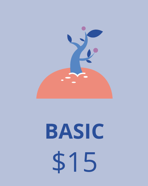
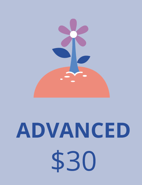
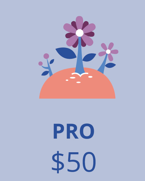

ETL/ELT Pipeline Build
From raw sources to curated tables with validation, logging, and clear documentation.
Request thisData Engineer
I’m Mohamed Alaa Hussein, a Data Engineer focused on turning raw data into trusted, analytics-ready datasets. I build ETL/ELT pipelines, design clean data models (star schemas), and implement validation + structured logging to keep data reliable. I help teams, startups, and analysts who need consistent KPIs, faster refresh cycles, and fewer “why is this number wrong?” moments. My USP is a systems mindset: reproducible runs, clear ownership, and documentation that makes pipelines easy to maintain. My portfolio includes 3 end-to-end case studies covering ingestion, transformation, and data quality checks using Python, SQL, and Git. I care about clarity, reliability, and measurable impact not fragile scripts. Keywords: ETL/ELT, data modeling, data quality, SQL, Python, validation, logging, version control. If you want clean pipelines and dependable metrics, let’s talk email me from the Contact section below.
What makes my work different in real projects.
Pipelines designed like products: reproducible, observable, and maintainable.
Validation rules + structured logs to prevent silent failures and speed debugging.
Clear schemas, metric definitions, and runbooks that teams can actually use.
Faster refresh, consistent KPIs, and models built for analytics performance.
A timeline recruiters can scan fast.
2022 — 2027 (Expected)
Strong analytical problem-solving and engineering discipline that translates to reliable systems and data work.
Project-based learning
Hands-on projects across ETL/ELT, modeling, validation, and documentation—built with production habits in mind.
A focused stack that communicates competence.
Clean code, reusable modules, strong READMEs.
Design-first, then implement with observability.
Schema + indexes + performance awareness.
Selected work and case studies.
Built end-to-end pipelines and analytics models with documentation, validation checks, and maintainable structure.
Clear READMEs, consistent naming, and reproducible runs—so others can operate the pipeline without guessing.
Click a card to view details.
Practical services you can request immediately.
From raw sources to curated tables with validation, logging, and clear documentation.
Request this
Star schema + metric definitions to create consistent KPIs and fast reporting queries.
Request this
Checks, alerts, and logs that catch errors early and improve trust in your datasets.
Request thisChoose a tier, then customize the scope.



Replace placeholders with real feedback.
“Clear documentation and consistent results. The pipeline was easy to review and operate.”
“Strong attention to data quality. Issues were caught early with helpful logs.”
“The data model made our reporting simpler and faster. Clean and well-structured.”
Fastest: email or LinkedIn.
mohamedalaah5ss@gmail.com
/in/mohammed-alaa-engineer
Click to open
mohamedalaah5ss-oss
Click to open